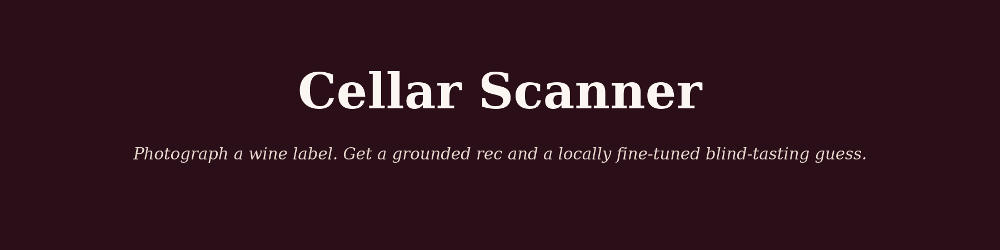
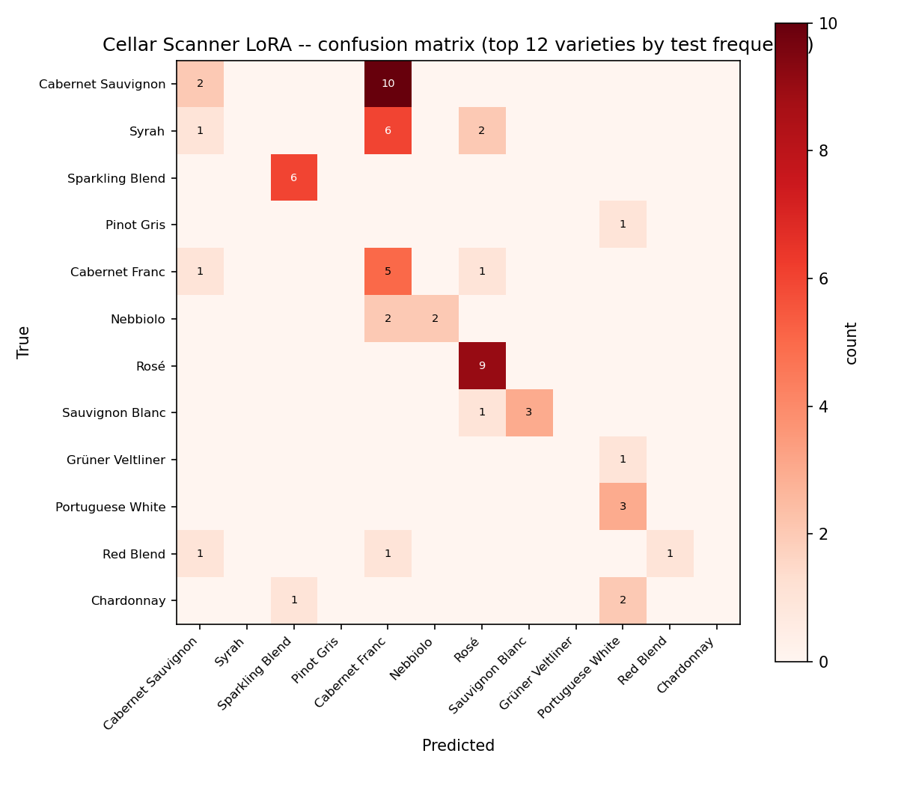
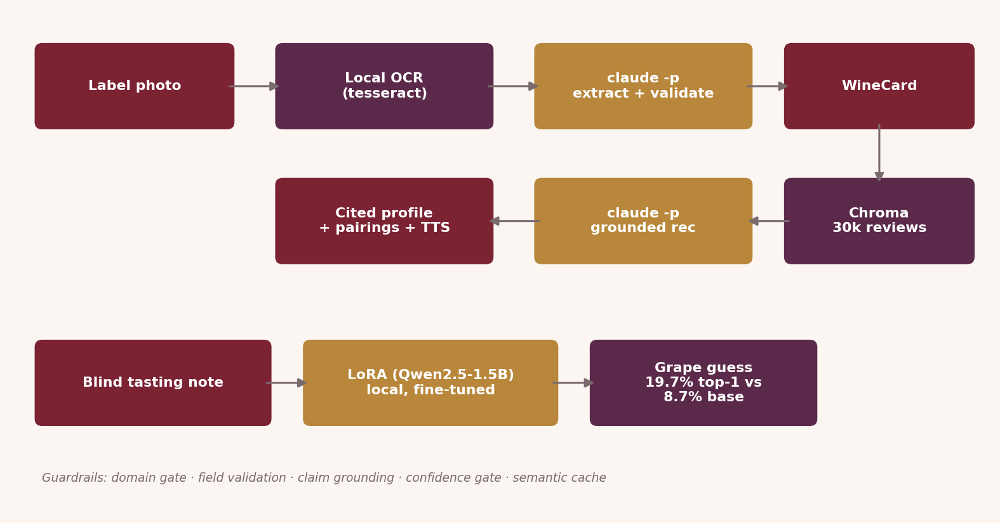
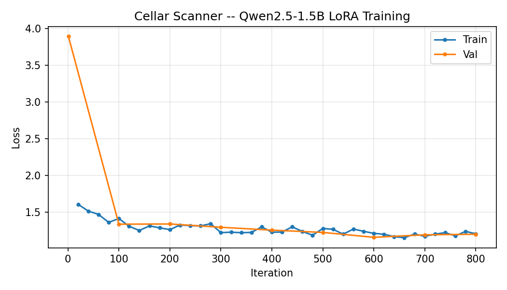

Vision, entirely local
tesseract OCRs the label, then claude -p does
the domain check and structured extraction in one call. No Gemini or
OpenAI vision key required.
Ask a chatbot about a wine label and it will invent a producer.
Photograph a bottle and Cellar Scanner reads the label for real, retrieves genuinely similar wines from 30,000 professional reviews, and grounds every sentence it writes in what it actually retrieved. Anything that fails to ground is dropped and regenerated, and citations are real review ids rather than plausible-looking numbers. Alongside it runs Blind Taste Mode: a 1.5B model, LoRA fine-tuned on this laptop, that names the grape from a tasting note alone — and beats Claude's zero-shot accuracy doing it.

Top-1 blind-tasting accuracy from the fine-tuned 1.5B model, against Claude's zero-shot 23.0%.
macro-F1, against Claude's 0.119. The gap is wider on F1 than on accuracy, so it is not one lucky class.
reviews in the index, stratified across every represented variety by water-filling rather than skimming the top-rated.
per thousand calls. Local OCR, local embeddings, local inference, no vision API key anywhere.
↓ the headline result
Top-1 grape identification from a masked tasting note. Claude zero-shot: 23.0%.
A model small enough to run on a laptop, trained on this exact task, out-performed a much larger general model prompted cold. That is the whole argument for fine-tuning stated as a number rather than a claim.
| System | Top-1 | Top-3 | Macro-F1 | Latency | Cost/1k |
|---|---|---|---|---|---|
| Base Qwen2.5-1.5B (no fine-tune) | 8.7% | 14.3% | 0.021 | 4.3s | $0 |
| + LoRA (this project) | 27.7% | 27.7% | 0.253 | 10.6s | $0 |
| Claude (teacher, zero-shot) | 23.0% | 30.5% | 0.119 | 69.6s | Max sub |
Claude keeps Top-3, and the reason is a real flaw rather than a mystery. The LoRA model's Top-1 and Top-3 are identical because it never populates ranks 2 and 3 at all: its training target was always a single-line answer, so it is reproducing its training signal faithfully. A retrain with true multi-item targets would close that gap. It is reported here rather than buried, because a benchmark that only shows the row you won is not a benchmark.
↓ the part that makes the number mean anything
Wine reviews routinely name the grape in the first clause — "this Cabernet shows..." — so a blind-tasting benchmark built on raw review text is not a tasting task at all. It is string matching, and it would have produced a spectacular and worthless accuracy figure.
Every training and reference note therefore has grape names
masked out before scoring, and the masking rate is written
to eval/masking_report.json so the claim is auditable. The 27.7%
is what is left when the answer is genuinely not in the input.

↓ the pipeline
tesseract OCRs the label, then claude -p does
the domain check and structured extraction in one call. No Gemini or
OpenAI vision key required.
Non-wine photos are rejected and low-confidence reads are flagged before any retrieval happens, so a bad read never becomes a confident recommendation.
Every sentence of the profile and every pairing reason is checked against the retrieved reviews. Anything that does not ground is dropped and regenerated.
Citation ids point at actual reviews in the index. There is no code path that can produce a citation to something that was not retrieved.

↓ training
The adapter was trained on roughly 37,000 winemag tasting notes with the grape names masked out of the training text, so the task is blind during training as well as at evaluation. The loss curve is in the repository rather than described, which is the only way a reader can tell a converged run from a hopeful one.

Finish · what it is built on
sentence-transformers + Chromatesseract, locallyclaude -p on a Max subscription, so no per-token costtraining/bench_classifier.py, which subsamples for tractable iteration and discloses the subsample size